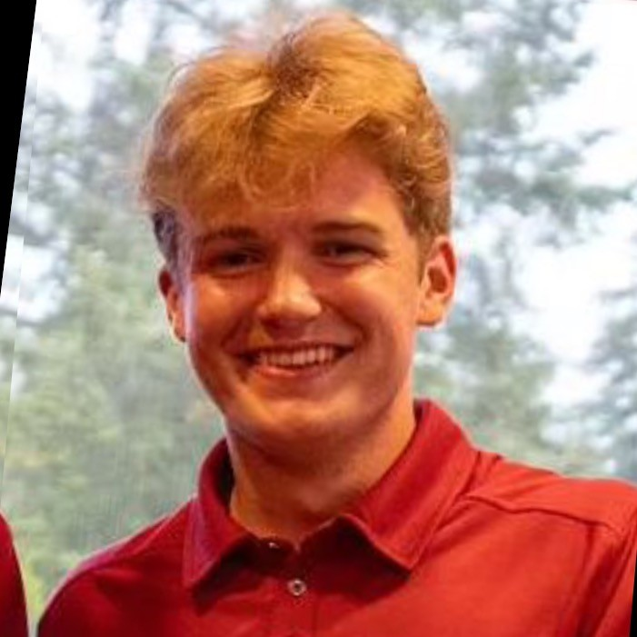

About Me
I am a student at Queen’s School of Computing. I’m interested in sports such as Hockey, Golf, and Baseball. I also have a strong interest in history.

Courses
- CISC 121 - Introduction to Compting Science.
- HIST 287 - Early Modern England.
- ARIN 100 - Fundamentals of AI.
- ECON 231 - Emergence of the Modern Industrial Economy.
- ECON 354 - Computational Methods in ECON and Finance.
Projects
- Project One — A data analytics model that under some variable decisions and constraints creates a roster of NBA players that has the highest probability of winning a championship next season.
Contact
Email: 22rqs@queensu.ca
LinkedIn: linkedin.com/in/jonny-clasby-b6a536300